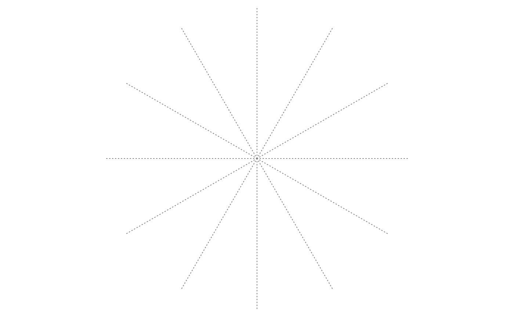

solve_theta_from_spiral_length.RdGet theta from given spiral lengths
solve_theta_from_spiral_length(len, interval = NULL, offset = 0)
| len | A vector of spiral lengths. |
|---|---|
| interval | Interval to search for the solution. |
| offset | Offset of the spiral. In the general form: theta = a + r*theta, offset is the value of a. |
The length of the spiral has a complicated form, see https://downloads.imagej.net/fiji/snapshots/arc_length.pdf .
Let's say the form is l = f(theta), solve_theta_from_spiral_length tries to find theta by a known l.
It uses uniroot to search solutions.
s = current_spiral() theta = pi*seq(2, 3, length = 10) len = s$spiral_length(theta) solve_theta_from_spiral_length(len) # should be very similar as theta#> [1] 6.283185 6.632251 6.981317 7.330383 7.679445 8.028513 8.377580 8.726646 #> [9] 9.075712 9.424782